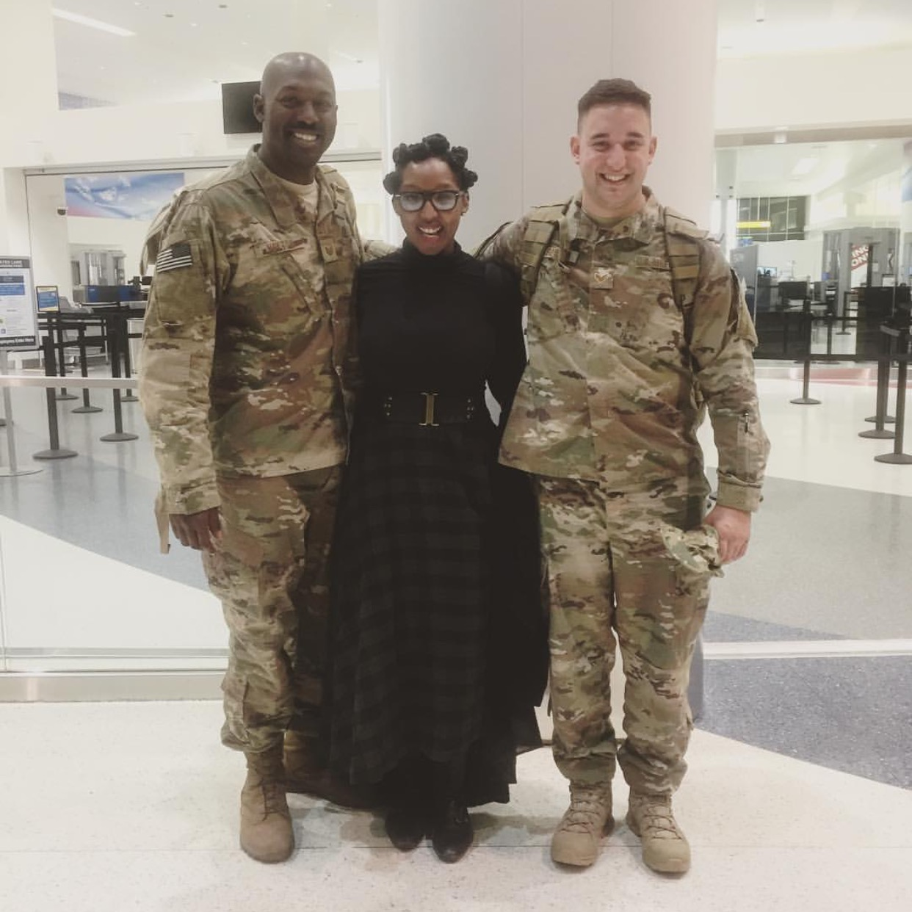
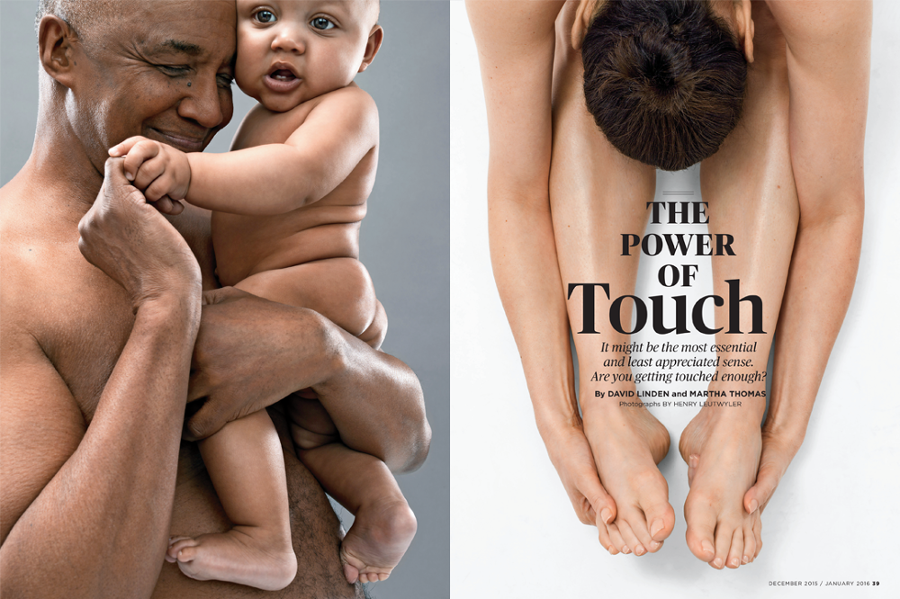
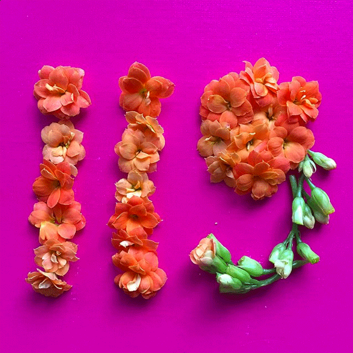
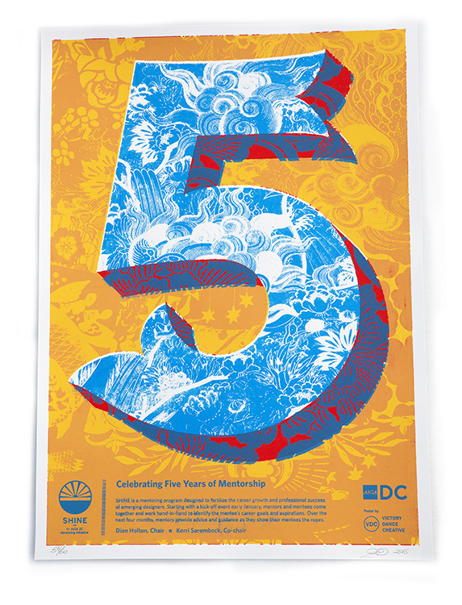
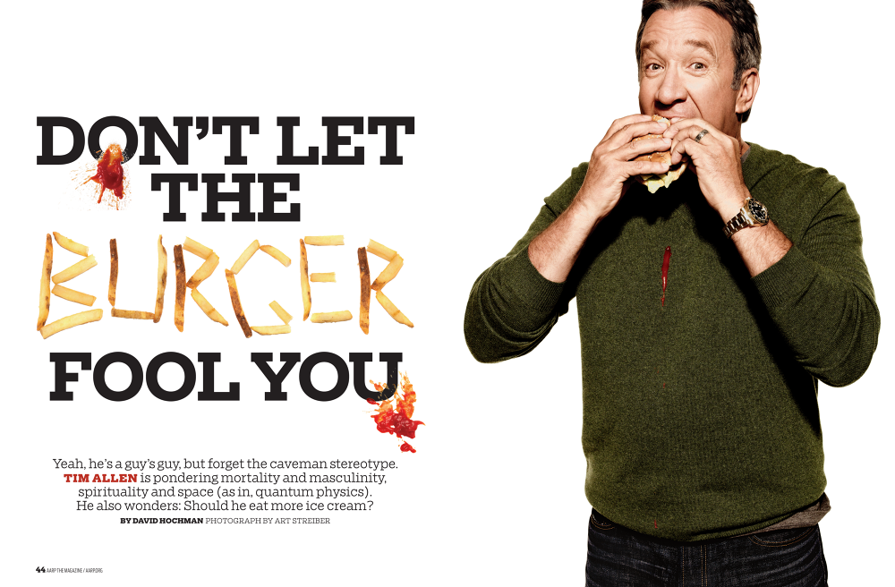

Short Bio
Dian is a deputy art director at AARP, artist and freelance visual display associate. Her background includes publishing (print/digital), integrated marketing, branding, retail installation, and styling. She currently serves on the AIGA Washington DC chapter board as the Diversity and Inclusion Chair and Design Continuum Fund director. Her passions include education, philanthropy, fashion and pop culture.
The daughter of a man in uniform
I was born in Georgia and am the daughter of two Florida A&M graduates, Deb and Walt. I have a younger brother, William, who at press time is deployed to Syria, and who together traveled the world as military dependents. Our father was an Army colonel (infantry no doubt), and our mom was a buyer who's career pivoted upon marrying our dad to be a military wife. (pause: that's love). In addition to being a soldier and accounting major, my dad dabbled in photography and painting. My mom was an artisan and too had her hands in multiple things – quilting, sewing, basket weaving, curating and managing stores that catered to arts and crafts. She was an avid volunteer coordinator and passionate about helping those in need. I'd say in a nutshell that these two souls and the work they did and continue to do, contributed to shaping me into the person I am today.
How did you first get interested in design?
I think it stemmed from early years via my mom. As a kid, I wanted to be a fashion designer or illustrator. I switched to graphic design at FAMU after realizing that the clothing and retail program (my moms major) was no longer there. I embraced the program, joined the school newspaper, headed up a student chapter of Epsilon Pi Tau and interned during the summer. I had a great upperclassman as a mentor, Jason Jones, and consistently explored various disciplines within design. Secretly I did and always wanted to work in fashion, but after being exposed to news design or rather publication design, I begin to gravitate towards that genre.
Tell me about the work you've done?
I've worked as a publication art director for over ten years. I started my career in newspapers and then transitioned into the magazine space. My day today includes working on the print and digital versions of AARP The Magazine. Periodically I'll design for other platforms such as traveling exhibits and books. Additionally, I've worked at the GAP and Anthropologie as a store visual designer, creating exterior window displays and interior installations. I also very much enjoy personal arts and craft projects like my #DailyDigits on Instagram.
What are your proudest accomplishments of your career?
Whew. Proudest accomplishments. Hmm... I'd say first having a sustaining career in design. So many people have switched careers, so I'm proud of that. Second, I'd say being able to navigate from newspaper to magazine to retail spaces, working with amazing people along with helping produce exciting work. I've enjoyed working with celebs over the years. Some highlights for me had included instance art directing Ricky Martin in Miami hours before a Hurricane touched down (I got the shot, and he got some shoes) and directing as well as standing in for a model during an epic Fran Drescher photoshoot. Other significant highlights have included launching AARP's Beauty and Style blog which meant writing (gasp), interviewing design icons like Norma Kamali and tv/film costumes. Speaking of first, I also art directed and designed AARP's first Beauty and style app. My last accomplishment that I'm most proud of being able to be a role model for minorities. Through my work with AIGA at both the local and national level, I help develop diversity and inclusion programming, guidance and awareness.
What have been your biggest struggles of your career?
The biggest struggles have been not manifesting or landing that dream job. I'm still holding out. Otherwise, my struggle is time management.
What are you doing that's special that sets you apart from your careers.
I'm not just working in my discipline of publication design. I dabble in other areas outside of my full-time job like my aforementioned #DailyDigits projects, and second I work periodically as a freelance retail windows display associate in the wee hours of the morning before heading into AARP.
What have your experience been as a person of color in the design industry.
My experience as a person of color has been that I have indirectly become an ambassador for 1) African American females/art directors, 2)designers who graduated from an HBCU working in the creative field and 3) black designers working within the publication design discipline. Given that and my board involvement with AIGA, I've realized that I'm a role model for some and that I should be cognizant of things that I say and do publicly because there's not that many of us. Recent proof: the 2017 AIGA Design Census.
What are your biggest motivators?
Whew. This is tough. I think I'd have to say that little voice within that whispers or sometimes screams, "if you don't like how they're doing it - do it yourself." Followed by greed, people I idolize, and the fact that by doing something via design I am helping to enrich someone else's life or experience.
I love that if you can dream it, you can do it. Sounds cliche but its true. Whatever the medium, you can work with people to make it come to fruition.
What do you love most about working in design?
I love that if you can dream it, you can do it. Sounds cliche but its true. Whatever the medium, you can work with people to make it come to fruition. I also love that design solves problems, that often you didn't realize you had. I enjoy working with other creatives to problem solve and as a designer in media, to tell a story or narrative.
What would you like to see changed about the design field?
I don't have all the answers to this, but I'd say:
1) Seek and find more people of color to hire. Companies need to step out of their comfort zones and actively look for people of color. It has been proven that having a diverse race workforce, increases the outcome, ideation, and problem-solving of projects. The excuse "I can't find anyone," is just that an excuse. But anyone reading this knows that already right?
2) Do outreach in underrepresented communities and schools. If we want to move the needle as it pertains to this segment professionally we need to be there influencing, educating and teaching those at an earlier age.
3) Highlight and encourage minority staffers to speak up and take initiative. I've seen and heard that a number of people don't have a seat at the table because there not asked, invited or are intimated. I'd hope managers would encourage their staff and even mentor them so that they not only be strong designer and design thinkers but outstanding design leaders. When there is a call for a panelist or public speaker, encourage or make your minority staff step up. And yes, I said make. Help groom their public speaking and presentation skills.
4) Represent. Have minority faces depicted in artwork. Find a way to showcase a variety of people from these demographics. Whether it's illustration or photography what I've learned from working at mainstream brands is that people want to see themselves in the content (print, digital, environmental, retail,etc.). Be inclusive and positive in your depictions.
What are you working on right now, either for work or for yourself?
Too much. Always. Publicly I'm still working at the day job, continuing my #DailyDigits series which appears on my Instagram, and working on a fun installation for the Fall. Privately, I have future projects - one that I worked on with my dad should debut in the summer and a few wearables. And then I'm always always always working on something AIGA related (events, strategy, development).
Where do you see yourself in 5 or 10 years? Do you think you'll stay in design?
Absolutely. I love print, but I can see myself immersed in other areas within the umbrella of design. My goal is to work with corporate retail brands ideating and executing marketing campaigns and product.
What advice would you give to folks from similar backgrounds who are in design or hoping to get into it?
Focus, research, network, implement and don't give up. Build in some self-care which includes taking a break. Repeat.